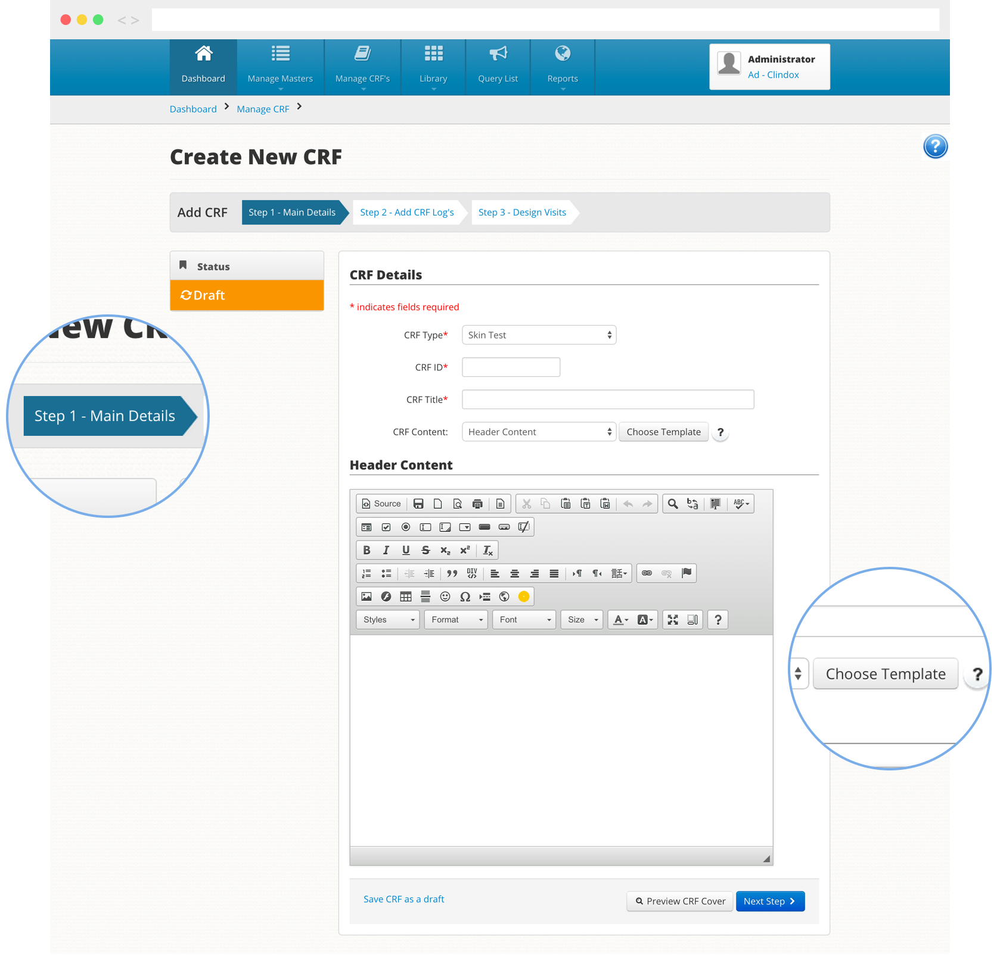
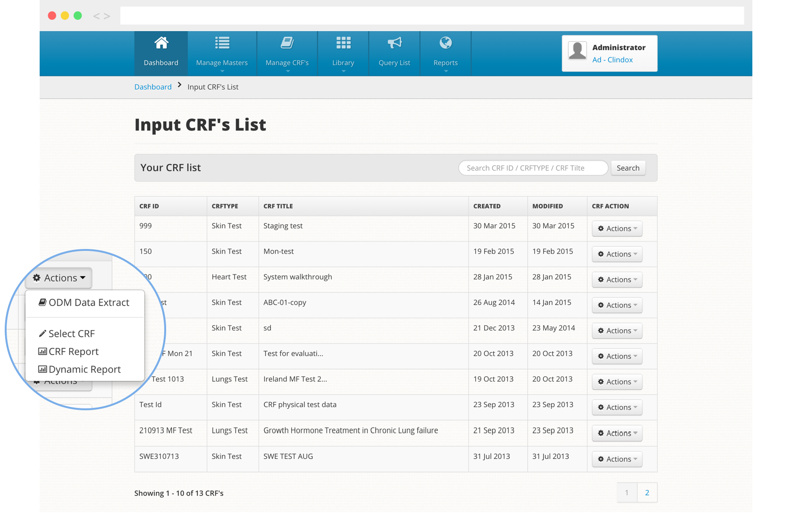
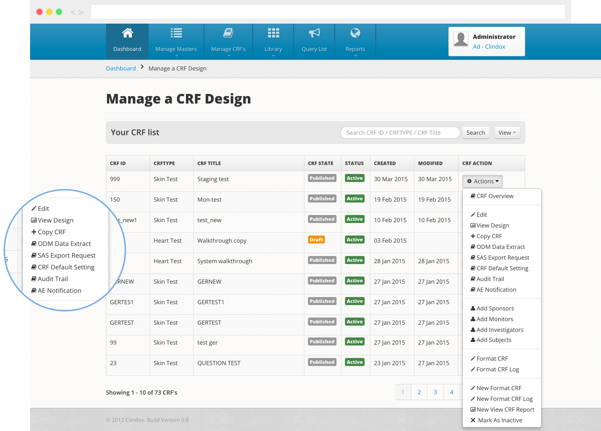

Call: +353 1 4800 540
The CRFweb HTML Editor suite is easy to use and intuitive. Designed to have the look, feel and functionality of typical office software suites, CRFweb gives instant familiarity. Only rudimentary training is required to understand the process. It’s genuinely DIY, but support is always available if required.
Here's how it all works...
Just click on the 'create new CRF' icon to get up and running. This takes you through the logical steps to create your study. After entering the basic study information, you can design the page layout using simple office style formatting, or HTML coding if you desire.
Study design
Next you add and edit the key components of your study (eg. Medicine log or incident log) from our CRF log. The system structures all interview questions on a visit by visit basis, so the next step is to set up and design those visits . All questions related to a specific visit to the subject are set here and can be grouped into multiple sections to accommodate complex or multiple questions as appropriate. You can create your own questions or add them from a template or question bank.
Once your first CRF has been set up, you can use it as a template for future work and edit as required.
Defining access roles
CRFweb follows a dynamic approach to role based access controls. You determine the number of roles and their defined capabilities when setting up a study; common default roles, such as Investigator, Data Manager, Monitor will be in your company settings, however you can rename, add and define roles to meet a studies specific needs.
All roles that have an active participation in a CRF are assigned to that particular CRF, while system-wide users can have for example a ‘view reports only' access not assigned to specific CRFs. Individual users can also have multiple roles within their profile as required. In short, you have complete control of who has access to what.
Once you have your CRF set up, both you and your investigators will be able to input data according to the designated access levels you’ve assigned. All users can access from desktop, laptop or tablet as required.
Everything is ergonomically designed for ease of use. From the dashboard, just click on the ‘input data to a CRF’ icon and away you go. It’s just one click to the main areas of the process and one click back again. Users are taken through a step by step process for data entry and you can save and review saved work as you go.
You can add a new subject here and/or allocate a subject to a CRF. The Colour coded process bar gives each user a clear overview of each subject’s status within a study. When with a subject, the investigator simply goes to the appropriate visit and all the information required, and questions to ask, are simply and clearly laid out.
Query List, the dedicated query management and resolution tool, enables different roles/users to troubleshoot queried data within their security level. Data Managers and monitors can analyze data input once entered, raise an issue log to query questions or groups of questions, filter queries to meet specific requirements and audit via issue reports.
The 'Manage a CRF' section is the trial manager’s control centre. Here you can monitor the progress of all your CRF’s. You can edit a CRF, adding saved questions, sections and Logs from your online library if required. It also allows you to collect data, Verify Data, Confirm Data and monitor Subjects, Investigators and CRF progress - all from one screen.
From the 'Manage a CRF' section you can also output reports: All data is mapped using CDISC’s ODM model and reporting outputs offer direct XML ODM Transactional and Snapshot outputs. Alternatively, data can be translated to a SAS Export file or simply outputted directly to an excel spreadsheet. An audit trail provides reporting capability on a specific question or visit level. Results can be filtered to focus the information as required.
We take security very seriously. To give your confidential data maximum possible security, we use the latest SSL_256-bit encryption, and access is continually monitored. We use servers based in Europe & the US for proven reliability.
CRFweb Complies with FDA 21 CFR Part 11 regulations and has been independently audited. It also meets GCP (Good Clinical Practice) standards. We have utilised the CDISC ODM (Operational Data Model) as our default coding standard for all aspects of a clinical trial; both Transactional and Snapshot data extracts are available for all datasets. Snapshot and Transactional ODM files can be exported as either XML or .xls files or exported as a SAS Xport file.
CRFweb now features a fully integrated ePRO interface, where subjects can answer questionnaires without risk of accessing other functionality or data. Site staff can easily initiate a subject session to allow the subject to answer at the clinic (e.g. using a tablet), or the subject can log in from home with a unique username and password. Features summary:

CRFweb is a Clindox application
CRFweb is fully compliant with and a Gold Member of the
Clinical Data Interchange Standards Consortium


Clindox is a limited company registered in Ireland
Registered number: 526690 © Copyright Clindox 2015
Testing